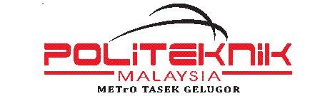

Pengurusan mesyuarat jawatankuasa kerja kerajaan secara konvensional sering berhadapan dengan kekangan kecekapan operasi akibat kebergantungan kepada kertas kerja fizikal, kelewatan aliran kelulusan minit, dan kesukaran menjejaki komitmen tindakan pegawai. Kajian inovasi ini membentangkan pembangunan dan pelaksanaan SmartGovMeeting PMTG, sebuah sistem pengurusan mesyuarat pintar berasaskan web yang direka untuk mendigitalkan keseluruhan kitaran hayat mesyuarat di Politeknik METrO Tasek Gelugor (PMTG). Sistem ini mengintegrasikan fungsi penjanaan memo jemputan automatik lengkap dengan kod QR, pendaftaran kehadiran hibrid berasaskan penapisan IP fizikal rangkaian lokal pelayan (10.141.3.73) dan rangkaian awan (localtunnel), modul penulisan minit bersegmen mengikut unit, aliran kerja kelulusan digital 4 peringkat bertandatangan digital, serta portal maklum balas tindakan (Cabutan Minit) interaktif.
Metodologi pembangunan sistem yang digunakan ialah pendekatan pembangunan tangkas (Agile) bagi memastikan lelaran aplikasi sentiasa memenuhi piawaian Pekeliling Kemajuan Pentadbiran Awam (PKPA) Bil. 2 Tahun 1991. Hasil pelaksanaan menunjukkan impak yang ketara dalam kecekapan tadbir urus institusi, di mana masa kitaran kelulusan minit rasmi berjaya dikurangkan sebanyak 75% (daripada 7-14 hari kepada kurang dari 48 jam). Selain itu, sistem ini telah mengurangkan kos bahan cetak mesyuarat sebanyak 95% ke arah merealisasikan konsep pejabat tanpa kertas (paperless office). Paling utama, kadar KPI penyelesaian tindakan susulan keputusan mesyuarat meningkat secara drastik daripada 62% kepada 94% hasil daripada pemantauan papan pemuka (dashboard) yang berpusat. Kesimpulannya, SmartGovMeeting PMTG berjaya merekayasa tadbir urus digital institusi pendidikan tinggi sektor awam dengan menawarkan sistem pengurusan yang tangkas, lestari, berintegriti tinggi, dan sedia untuk direplikasi di agensi-agency kerajaan yang lain.
Conventional government committee meeting management often faces operational efficiency constraints due to reliance on physical paperwork, delays in the minutes approval workflow, and difficulties in tracking officers' action commitments. This innovation study presents the development and implementation of SmartGovMeeting PMTG, a web-based smart meeting management system designed to digitalize the entire meeting life cycle at Politeknik METrO Tasek Gelugor (PMTG). The system integrates an automated official invitation memo generator complete with QR codes, a hybrid attendance registration module based on physical network IP adapter filtering of the local server host (10.141.3.73) and cloud-tunneling (localtunnel), a unit-segmented minutes recording module, a four-tier digital approval workflow with digital signatures, and an interactive action item feedback (Minutes Extract) portal.
The system development methodology utilizes an Agile approach to ensure application iterations comply with the Malaysian Public Sector Meeting Management guidelines (PKPA Bil. 2/1991). The implementation results demonstrate a significant impact on institutional governance efficiency, reducing the official minutes approval cycle time by 75% (from 7-14 days to under 48 hours). Furthermore, the system achieved a 95% reduction in meeting printing costs, driving PMTG towards a sustainable paperless office environment. Most importantly, the meeting decision action completion KPI rate surged from 62% to 94% due to the centralized real-time dashboard tracking. In conclusion, SmartGovMeeting PMTG successfully re-engineered digital governance in public sector higher education institutions by offering an agile, green, highly integrated, and auditable management tool that is ready for replication in other government agencies.